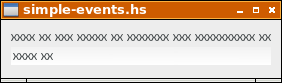

Tarkastellaan lähdekoodia: simple-events.hs
Ohjelma luo tutun ikkunan.

Lähdekoodi: simple-events.hs
Funktiolla onEditableChanged tekstikenttä entry saa tapahtumankäsittelijän entryTextChanged.
entry <- entryNew
entrySetHasFrame entry False
boxPackStart vbox entry PackNatural 3
onEditableChanged entry (
entryTextChanged entry)
Tapahtumankäsittelijän toiminta on yksinkertainen, se tulostaa tapahtuman nimen, sen POSIX-ajan ja tekstikentän tekstin ruudulle.
entryTextChanged entry = do
txt <- entryGetText entry
pt <- getPOSIXTime
putStrLn ("Entry ## " ++ (show pt) ++ ": " ++ txt)
return ()
Ajastin alustetaan funktiolla timeoutAdd. Ensimmäinen parametri on tapahtumankäsittelifunktio timeIsOut. Toinen parametri on aika millisekunteina.
timeoutAdd timeIsOut 1000
Myös tämä tapahtumankäsittelijä on toiminnaltaan yksinkertainen, tulostaen tapahtuman nimen ja POSIX-ajan.
timeIsOut = do
pt <- getPOSIXTime
putStrLn ("Timer ## " ++ show pt)
return True
Tyypillinen käyttökerta tulostaa
$ runhaskell simple-events.hs
Timer ## 1413918113.807756s
Entry ## 1413918114.648762s: x
Timer ## 1413918114.808328s
Entry ## 1413918115.200725s: xx
Entry ## 1413918115.662261s: xxx
Timer ## 1413918115.80882s
Entry ## 1413918116.278175s: xxxx
Timer ## 1413918116.810192s
Entry ## 1413918117.120765s: xxxx
Entry ## 1413918117.478783s: xxxx x
Entry ## 1413918117.682427s: xxxx xx
Timer ## 1413918117.81128s
Timer ## 1413918118.812609s
Timer ## 1413918119.813201s
$